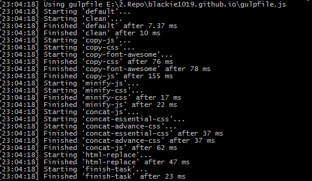

讓Gulp可以建立有相依性的系列工作，協助我們解決在有必要依序執行的工作上做更彈性的設置
當我們在使用Gulp預設的相依性是單一且十分單純的。當我們今天有較為複雜的使用情形就會不堪使用。
Runs a sequence of gulp tasks in the specified order. This function is designed to solve the situation where you have defined run-order, but choose not to or cannot use dependencies.
而run-sequence則是專門解決這樣情形的gulp套件
run-sequence 基本操作
開始正式使用前先來看一下基本配置
安裝指令
npm install --save-dev run-sequence
基本使用
以下是官方簡單的介紹與載入方式
This will run in this order:
- build-clean
- build-scripts and build-styles in parallel
- build-html
- Finally call the callback function
代碼:
var gulp = require('gulp');
var runSequence = require('run-sequence');
var del = require('del');
var fs = require('fs');
gulp.task('build', function(callback) {
runSequence('build-clean',
['build-scripts', 'build-styles'],
'build-html',
callback);
});
gulp.task('build-clean', function() {
// Return the Promise from del()
return del([BUILD_DIRECTORY]);
// ^^^^^^
// This is the key here, to make sure asynchronous tasks are done!
});
gulp.task('build-scripts', function() {
// Return the stream from gulp
return gulp.src(SCRIPTS_SRC).pipe(...)...
// ^^^^^^
// This is the key here, to make sure tasks run to completion!
});
gulp.task('callback-example', function(callback) {
// Use the callback in the async function
fs.readFile('...', function(err, file) {
console.log(file);
callback();
// ^^^^^^^^^^
// This is what lets gulp know this task is complete!
});
});
Web development 工作情境
接者我們以常見的前端開發來做配置，工作情境需求如下(工作順序如號碼從小到大):
- 清空發布的資料夾
- 搬移js,css檔案(一起做)
- 合併js,css檔案(一起做)
- 最小化js,css檔案(一起做)
- 清除所有暫存目錄與檔案
使用run-sequence建立工作
直接來看gulpfile.js的設定
var gulp = require('gulp');
var uglify = require('gulp-uglify'); // JS最佳化
var cleanCSS = require('gulp-clean-css'); // CSS最佳化
var concat = require('gulp-concat'); // 檔案合併
var del = require('del'); // 清空資料夾
var runSequence = require('run-sequence');
var public_dir = __dirname + '/public';
var bundle_dir = public_dir + '/bundle';
var bundle_js = bundle_dir + '/js'
var bundle_css = bundle_dir + '/css';
gulp.task('clean', function() {
return del([bundle_dir + '/*']);
});
gulp.task('copy-js', function() {
return gulp.src([
public_dir + '/vendors/jquery/index.js',
public_dir + '/vendors/fastclick/lib/fastclick.min.js',
public_dir + '/vendors/jquery_lazyload/jquery.lazyload.js',
public_dir + '/vendors/velocity/velocity.min.js',
public_dir + '/vendors/velocity/velocity.ui.min.js',
public_dir + '/vendors/fancybox/source/jquery.fancybox.pack.js',
public_dir + '/js/src/utils.js',
public_dir + '/js/src/motion.js',
public_dir + '/js/src/bootstrap.js',
public_dir + '/js/src/scrollspy.js',
public_dir + '/js/src/post-details.js',
public_dir + '/js/src/swig/localsearch.js',
public_dir + '/js/src/swig/achive-year.js'
])
.pipe(gulp.dest(bundle_js));
})
gulp.task('minify-js', function() {
return gulp.src(bundle_js)
.pipe(uglify())
.pipe(gulp.dest(bundle_js));
})
gulp.task('concat-js', function() {
return gulp.src([
bundle_js + '/index.js',
bundle_js + '/fastclick.min.js',
bundle_js + '/jquery.lazyload.js',
bundle_js + '/velocity.min.js',
bundle_js + '/velocity.ui.min.js',
bundle_js + '/jquery.fancybox.pack.js',
bundle_js + '/utils.js',
bundle_js + '/motion.js',
bundle_js + '/bootstrap.js',
bundle_js + '/scrollspy.js',
bundle_js + '/post-details.js',
bundle_js + '/localsearch.js',
bundle_js + '/achive-year.js'
])
.pipe(concat('all.min.js'))
.pipe(gulp.dest(bundle_dir));
});
gulp.task('copy-css', function() {
return gulp.src([
public_dir + '/vendors/fancybox/source/jquery.fancybox.css',
public_dir + '/vendors/font-awesome/css/font-awesome.min.css',
public_dir + '/css/main.css'
])
.pipe(gulp.dest(bundle_css));
})
gulp.task('minify-css', function() {
return gulp.src(bundle_css)
.pipe(cleanCSS({
debug: true
}, function(details) {
console.log(`${details.name}:[${Math.round(details.stats.efficiency *100)}%]${details.stats.originalSize}=>${details.stats.minifiedSize}`);
}))
.pipe(gulp.dest(bundle_css));
})
gulp.task('concat-css', function() {
return gulp.src([
bundle_css + '/jquery.fancybox.css',
bundle_css + '/font-awesome.min.css',
bundle_css + '/main.css'
])
.pipe(concat('advance.css'))
.pipe(gulp.dest(bundle_dir));
});
gulp.task('finish-task', function() {
return del([bundle_js, bundle_css]);
});
gulp.task('default', function() {
runSequence(
'clean',
['copy-js', 'copy-css'],
['minify-js', 'minify-css'],
['concat-js', 'concat-css'],
'finish-task');
});

以上是不是很簡單就可以建立出複雜的工作事項，並且可以讓他們同步或是依序執行，彈性相當高呢!
結語
官方其實有特別註明以下一段話:
This is intended to be a temporary solution until the release of gulp 4.0 which has support for defining task dependencies in series or in parallel.
Gulp自身也知道大家都有需要使用相依性工作的情境，而在即將推出的Gulp 4.0裡面其實已經包含了這樣的特性跟解決方法，而這也是大家非常期待的一個新功能。在還沒有正式發布前大家就先用這個套件來解決問題吧。
對Gulp 4.0 其他特性有興趣的朋友可以參考官方發布的CHANGELOG